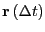
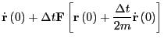

Next: Case Study 1: An
Up: MD: Theoretical Background
Previous: Newtonian Mechanics and Numerical
The Liouville Operator Formalism to Generating MD
Integration Schemes
In this section, we present an elegant formalism for deriving MD
integrators, as discussed by Tuckerman et
al. [9]. What we present here is essentially the
first two parts of the second section of
Reference [9], including some of my own elaboration
and some of that presented in section 4.3 of F&S.
Imagine a quantity  which is a function of particle positions
which is a function of particle positions  and momenta . Its time derivative is given by
and momenta . Its time derivative is given by
We can write down a formal solution to this equation. First,
define the Liouville operator as
As Tuckerman points out in his
coursenotes,
the  is there by convention and ensures that the operator is Hermitian. We can re-express Eq. 122 as
is there by convention and ensures that the operator is Hermitian. We can re-express Eq. 122 as
which we solve directly to yield
If is itself a vector quantity identical to the set of positions
and momenta,  , we have a way to express, formally, the
evolution of the system:
, we have a way to express, formally, the
evolution of the system:
where
is the classical propagator.
The idea with numerical integration is that we find a way to represent
the propagator as a discrete algorithm for constructing the
system at some time  given the system at time
given the system at time  .
.
Let's build our discrete integrator by decomposing the operator:
This does not necessarily lead to two independent propagators, because
the two components do not commute; that is:
Consider the action of the partial Liouville operator
which gives
The last line is the collapse of the Taylor expansion of the line
immediately above it. So, the effect of this operator fragment is a
simple shift of coordinates given some initial velocities. This is an
interesting fact: we can consider first-order integration as a Taylor
expansion.
The next step of Tuckerman was to apply the Trotter identity:
When  is large but finite:
is large but finite:
Now, we define a finite timestep as
and we have then
a discrete operator that, when applied to a configuration at time , will
produce the configuration at time :
By performing this operation sequentially times, we recover a
discretized version of the formal solution to generate
given
.
Now we explicitly consider the decomposition:
We can perform one  's worth of update using the following operation
on :
's worth of update using the following operation
on :
The action of the rightmost operator,
:
The action of the next rightmost,
:
Then, the action of the final operator:
Noting that
and
, we can summarize the
effect of this three-step update of the positions and velocities as
|  |
 |
|
(138) |
|
|
|
(139) |
This is the velocity-Verlet algorithm, seen previously in Eqs 119-121.
Interestingly, we can also reverse the order of the decomposition; i.e.,
The update algorithm that arises is
|
|
 |
(142) |
|
|
|
(143) |
This is termed the position Verlet
algorithm [9]. Tuckerman et al. showed that
this new algorithm results in a slightly lower drift in total energy
in MD simulation of a simple Lennard-Jones fluid, when the time-step
is greater than about 0.004.
Next: Case Study 1: An
Up: MD: Theoretical Background
Previous: Newtonian Mechanics and Numerical
cfa22@drexel.edu
![$\displaystyle \sum_{n=0}^{\infty} \frac{\left(\dot{\bf r}\left(0\right)t\right)...
...\partial{\bf r}^n}f\left[{\bf p}^N\left(0\right),{\bf r}^N\left(0\right)\right]$](img393.png)